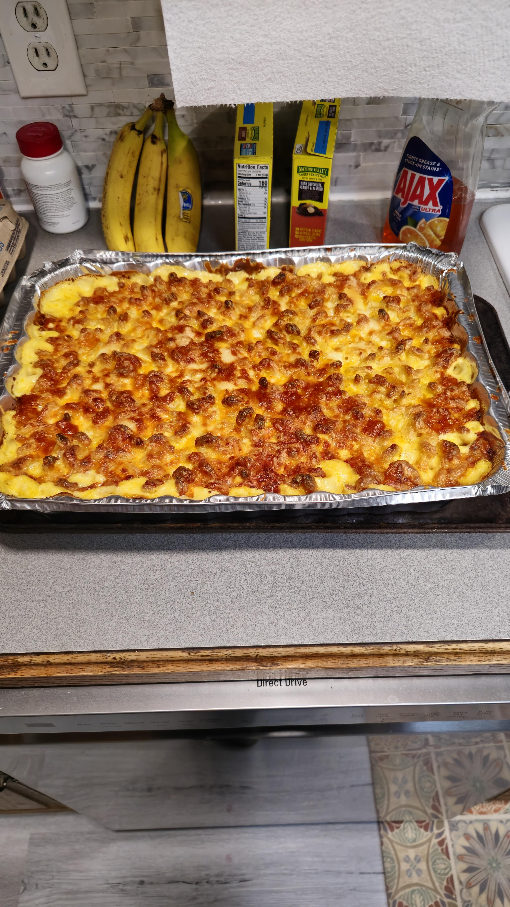

Macaroni and Cheese
Back to Home

Macaroni and Cheese Description
Macaroni and cheese—also called mac 'n' cheese in the US and Canadian English, macaroni cheese in the United Kingdom—is a dish of English origin, consisting of cooked macaroni pasta and a cheese sauce, most commonly cheddar. It can also incorporate other ingredients, such as breadcrumbs, meat and vegetables.
Ingredients
- 1/2 pound elbow macaroni
- 3 tablespoons butter
- 3 tablespoons flour
- 1 tablespoon powdered mustard
- 3 cups milk
- 1/2 cup yellow onion, finely diced
- 1 bay leaf
- 1/2 teaspoon paprika
- 1 large egg
- 12 ounces sharp cheddar, shredded
- 1 teaspoon kosher salt
- Fresh black pepper
- 3 tablespoons butter
- 1 cup panko bread crumbs
Steps
- Preheat oven to 350 degrees F.
- In a large pot of boiling, salted water cook the pasta to al dente.
- While the pasta is cooking, in a separate pot, melt the butter. Whisk in the flour and mustard and keep it moving for about five minutes. Make sure it's free of lumps.
- Stir in the milk, onion, bay leaf, and paprika. Simmer for ten minutes and remove the bay leaf.
- Temper in the egg. Stir in 3/4 of the cheese. Season with salt and pepper. Fold the macaroni into the mix and pour into a 2-quart casserole dish. Top with remaining cheese.
- Melt the butter in a saute pan and toss the bread crumbs to coat. Top the macaroni with the bread crumbs. Bake for 30 minutes. Remove from oven and rest for five minutes before serving.